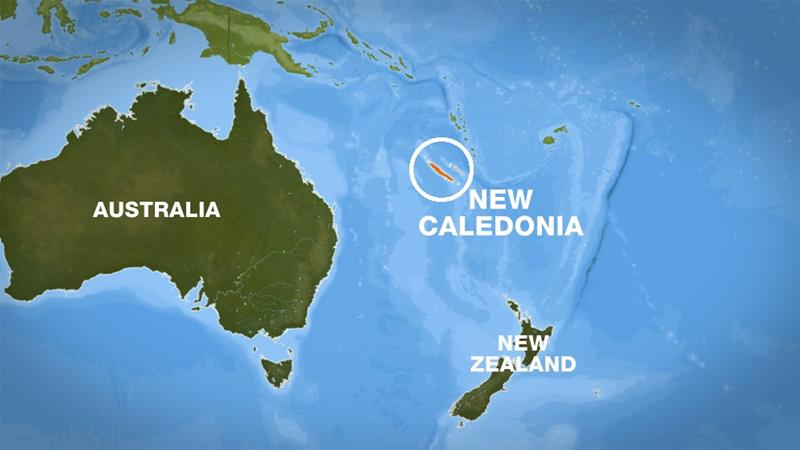
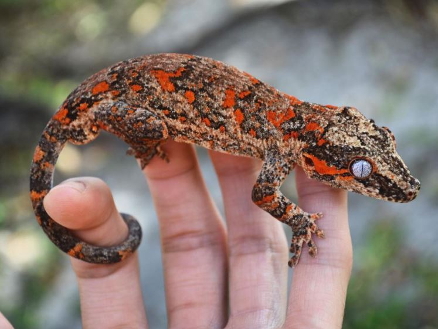
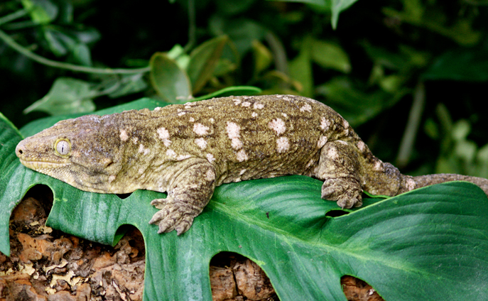
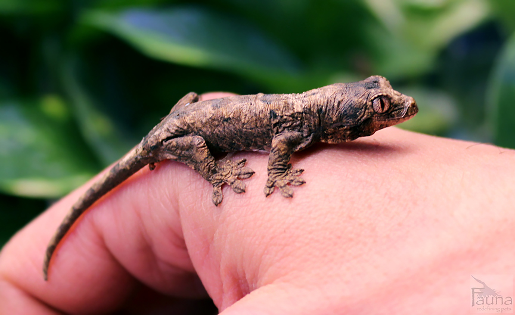
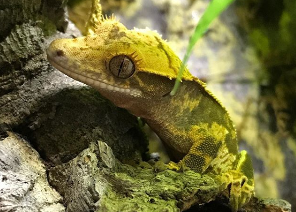

| Resume Page | C2E2 Page | Gecko Page |

Geckos Of New CaledoniaNew CaledoniaSituated to the north-east between Australia and New Zealand are the islands known as New Caledonia. New Caledonia isn't it's own country, it's actually a territory of France. It happens to have a climate great for harboring a variety of wildlife species, and in particular, a variety of species of Geckos. Why Geckos?New Caledonia happens to have a perfect climate and humidity for these reptiles, and over time they have even adapted to each island differently! The best example of adaption would be the Chahoua, also known as the Mossy prehensile tail gecko. The Most Well Known GeckosOf the reptiles on the island, these 4 geckos are the most well known, and also have a large presence in the pet trade. |

Gargoyle Gecko |
∙First described in 1869. ∙Popular in the pet trade. ∙Gets its name from the bumps on its head, which resemble that of a gargoyles. ∙Feed mostly on insects but can also adapt to a fruit based diet. ∙Can live perfectly normal and healthy lives even without their tails. ∙Reside throughout the majority of the island. |

Leachianus Gecko |
∙First described in 1829. ∙Can be found in the pet trade. ∙Considerably larger than any other gecko, Leachianus geckos can grow up to 14 inches (Island Gigantism). ∙Will eat almost anything that can fit in their mouths, including giant katydids, small rodents, and fruit. ∙Can make good pets, but require more space and care. ∙Reside throughout the majority of the island. |

Chahoua Gecko |
∙First described in 1869. ∙Recent in the pet trade, prices at the moment are extremely high due to desireability, and can reach even around $5000. ∙Also known for their instinct to curl into a ball when threatened. ∙Can also make great pets; compared to the Leachianus, they look very similar, but are just smaller and easier to care for. ∙Reside on The southern tip of the mainland, but also on an island south of there called the Isle of Pines. - Chahouas from the mainland tend to be duller in color, but have a slightly calmer temperament. - Chahouas from the isle of pines tend to have more vibrant and mossy colors. |

Crested Gecko |
∙Initially discovered in 1866, Crested Geckos were actually thought to be extinct until rediscovered in 1994. Since then, they've become a huge hit in the pet trade, so their numbers in captivity have rocketed upwards. Unfortunately in the wild, they are listed as vulnerable, largely due to climate change. ∙Best characterized by the ridge along their head and back - their "crest" - that is covered in "hair like projections" that resemble eyelashes, which is why another name for them is "eyelash gecko". ∙Can make great pets. ∙Unlike many other reptiles that can regrow their tails, Crested geckos actually do not regrow their tail once it's dropped. An occurence that results from high stress or a startling situation or scare. ∙Can live perfectly normal and healthy lives even without their tails. ∙Primarily found on the southern tip of New Caledonia. ∙(The picture above is a picture of my crested gecko, Nero!) |